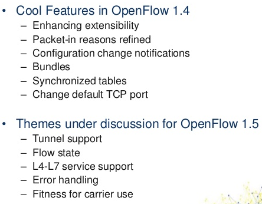

hardware interface of the switch
higher level abstractions that may be defined inthe switch using non-OpenFlow methods (e.g. link aggregation groups, tunnels, lookback interfaces).
specify generic forwarding actions
Switches support only OpenFlow operation, in those switches all packets are processed by the OpenFlow pipeline, and can not be processed otherwise.
Switches support both OpenFlow operation and normal Ethernet switching operation.
The flow tables of an OpenFlow switch are sequentially numbered, starting at 0. Pipeline processing always starts at the first flow table: the packet is first matched against flow entries of flow table 0.
A flow entry can only direct a packet to a flow table number which is greater than its own flow table number, in other words pipeline processing can only go forward and not backward.
If the matching flow entry does not direct packets to another flow table, pipeline processing stops at this table.
If a packet does not match a flow entry in a flow table, this is a table miss.
A flow table consists of flow entries.
A flow table entry is identified by its match fields and priority: the match fields and priority taken together identify a unique flow entry in the flow table. The flow entry that wildcards all fields (all fields omitted) and has priority equal to 0 is called the table-miss flow entry.
Every flow table must support a table-miss flow entry to process table misses. The table-miss flow entry specifies how to process packets unmatched by other flow entries in the flow table
If the table-miss flow entry does not exist, by default packets unmatched by flow entries are dropped (discarded).
multicast or broadcast forwarding
hash on some user-configured tuple or simple round robin
Allows multiple flow entries or groups to point to a common group identifier, supporting faster, more efficient convergence (e.g. next hops for IP forwarding).
If no buckets are live, packets are dropped.
A meter table consists of meter entries, defining per-flow meters. Per-flow meters enable OpenFlow to implement various simple QoS operations, such as rate-limiting, and can be combined with per-port queues to implement complex QoS frameworks, such as DiffServ.
A meter measures the rate of packets assigned to it and enables controlling the rate of those packets. Meters are attached directly to flow entries (as opposed to queues which are attached to ports). Any flow entry can specify a meter in its instruction set.
The instruction set associated with a flow entry contains a maximum of one instruction of each type.
Meter -> Apply-Actions -> Clear-Actions -> Write-Actions -> Goto-Table
|  |